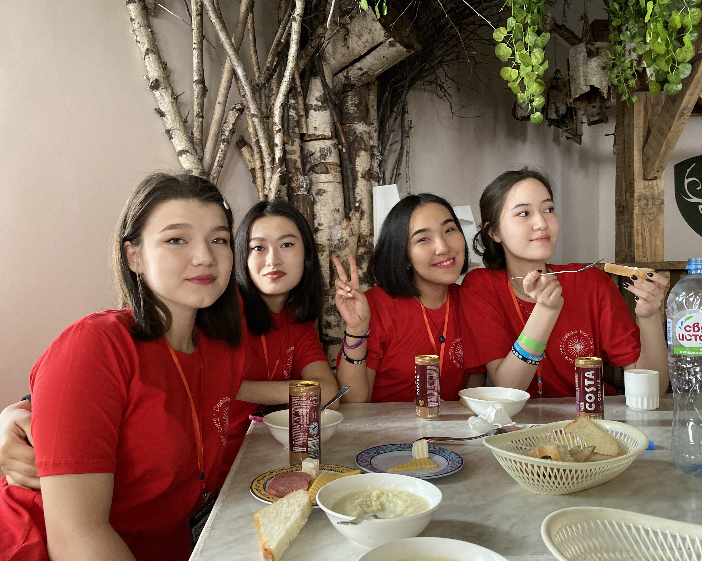

AIESEC
AIESEC is an international youth-run, non-governmental
and not-for-profit organization that provides young people with leadership
development, cross-cultural internships, and global volunteer exchange experiences.
The organization focuses on empowering young people to make a progressive social impact.

MUN
Model United Nations is an academic simulation of
the United Nations where students play the role of delegates from different
countries and attempt to solve real world issues with the policies and perspectives of their assigned
country. For example, a student may be assigned the United Kingdom and will have to solve
global topics such as nuclear non-proliferation or climate change from the policies and perspectives of the United Kingdom.

Voluntering
Volunteering is all about you being able to
contribute some of your own time to help people in our communities.
Volunteers support our communities and add to them in their own unique way using
a wide variety of skills, knowledge and experience.